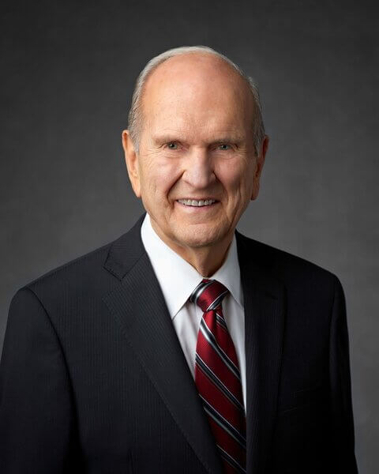

- Faith in the Lord Jesus Christ
- Repentance
- Baptism by immersion for the remission of sins
- Laying on og hands for the gift of the Holy Ghost

"Because of the Savior's Atonement, His gospel provides an invitation to keep changing, growing, and becoming more pure."